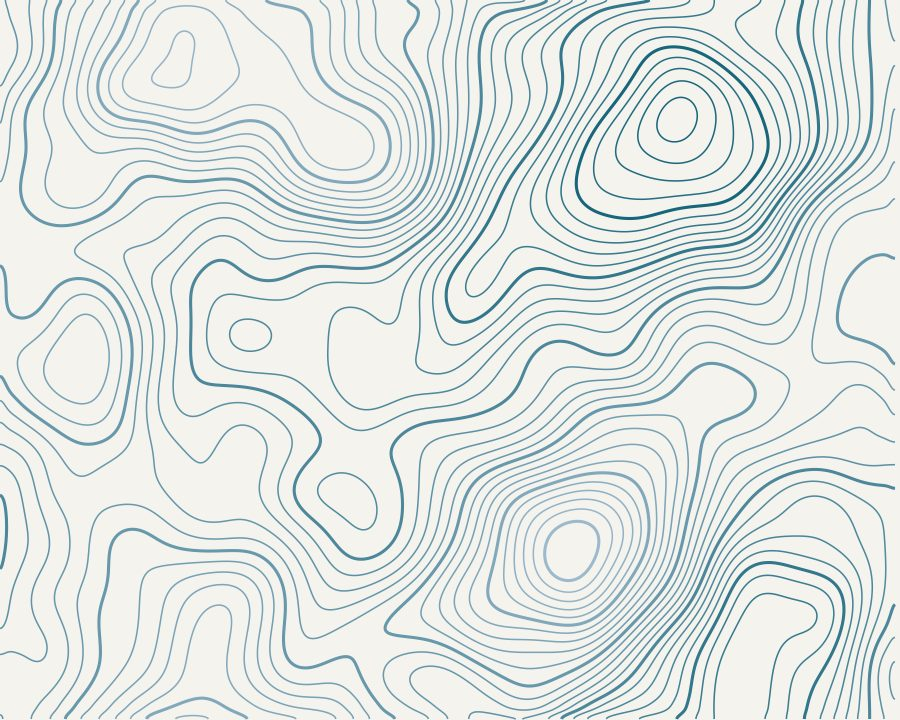
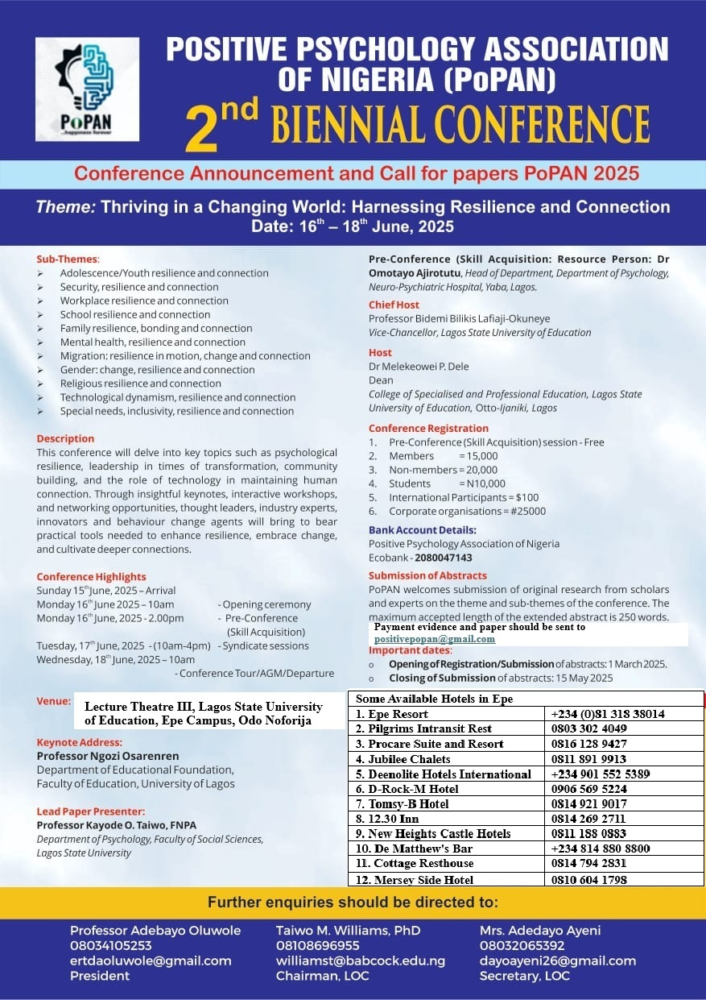

Advancing the science and practice of positive psychology in Nigeria and abroad
PoPAN is a non-profit association of scholars, researchers and practitioners, founded in 2020 and affiliated with the International Positive Psychology Association.
- Founded
- 2020Maiden meeting held 28 June 2020
- Status
- Non-profit associationGoverned by its constitution
- Affiliation
- IPPAInternational Positive Psychology Association
- Secretariat
- University of IbadanFaculty of Education Annexed Building
A professional home for positive psychology in Nigeria

Positive psychology is the scientific study of what enables individuals and societies to thrive.
PoPAN brings together scholars, researchers and practitioners in clinical, counselling, educational and allied fields of psychology who are committed to its ethical, evidence-based application.
The Association was convened in 2020 in response to a gap its founders saw plainly: many Nigerian graduates in guidance and counselling, educational psychology, psychology and allied fields leave university without the practical skills that public and private practice demand. PoPAN exists to retrain, to instil professionalism, to rebuild confidence and to activate mentorship among behaviour-change experts.
Read the full storyVision and mission
To integrate, promote and facilitate the science and application of positive psychology in Nigeria and abroad.
Promote and integrate
Advance people’s wellbeing, locally and internationally, through the science and application of positive psychology.
Collaborate
Facilitate global collaboration among researchers, teachers, students and practitioners of positive psychology.
Disseminate
Share evidence-based findings of positive psychology, and encourage their use, with the broadest possible audience.
What the Association is for
Five objectives guide the Association, as set out in Article 5 of its constitution.
Read Article 5Share knowledge
Disseminate information on the concepts, principles and strategies of positive psychology, and on how to live a happily fulfilled life.
Practical, evidence-based solutions
Provide practical, evidence-based solutions to human socio-psychological problems, and assist experts in acquiring new skills.
Counselling services
Offer e-counselling or face-to-face counselling by experts on mental-health-related issues.
A community of interest
Bring together people with a common interest to discuss social issues that bear on positive psychology: tips for optimal human functioning and toolkits for making life worth living.
A professional platform
Provide a platform for promoting academic ideals, job vacancies, fellowship opportunities, scholarships, institutional admissions, professional advancement, publications, conferences, networking and mentoring.
Guided by scholars and practitioners
The Executive Committee runs the Association’s affairs day to day, while the Board of Trustees provides continuity and oversight. Members of both bodies are drawn from universities and institutions in Nigeria and abroad.
- President
Prof. Adebayo D. OluwoleMNAE, CPCN, MCASSON, MPoPAN
University of Ibadan
Convener of the Association at its founding in 2020.
- Chairman, Board of Trustees
A.O. AremuCF, FSPSP, FCASSON, MNAE, JP
University of Ibadan
- Vice President
Prof. Ruth Aderanti
Babcock University
- Secretary
Prof. Taiwo M. Williams
Babcock University
- Treasurer
Dr Lovelyn A. Ikejiaku
St. Augustine College of Education

The 2nd Biennial Conference
Held under the theme Thriving in a Changing World: Harnessing Resilience and Connection at Lagos State University of Education, Epe Campus, the conference addressed psychological resilience, leadership in times of transformation, community building and the role of technology in human connection.
- Eleven sub-themes, from adolescence and youth resilience to special needs and inclusivity
- A keynote address by Professor Ngozi Osarenren of the University of Lagos
- A pre-conference skills-acquisition session, syndicate sessions and the annual general meeting


The 1st Biennial Conference
Held under the theme Positive Psychology in Challenging Times: Promoting national security through mental health, the conference sought research and policy papers on strategic ways to advance positive psychology in addressing Nigeria’s mounting security and mental-health challenges.
- Ten sub-themes, from adolescent mental health and the Sustainable Development Goals to data mining and artificial intelligence
- A pre-conference skills-acquisition session on the early warning signs and management of depression
- Recognition and awards for members who have contributed to capacity building and sustainable development
From the Association’s record
-
16–18 June 2025Conference
2nd Biennial Conference held at Lagos State University of Education, Epe Campus
The theme was Thriving in a Changing World: Harnessing Resilience and Connection, with a pre-conference skills session, syndicate sessions and the annual general meeting.
-
1 March 2025Call for papers
Registration and abstract submission open for PoPAN 2025
Abstracts of up to 250 words were invited on the conference theme and sub-themes, with submissions closing on 15 May 2025.
-
19 June 2023Conference
First Biennial Conference opens at the University of Ibadan
In his welcome address, the President noted that more than 60 scholars had signified their intention to present papers on the conference sub-themes.
-
23 January 2023Call for papers
Registration and abstract submission open for PoPAN 2023
Scholars and experts were invited to submit original research on the conference theme and sub-themes. Extended abstracts were limited to 250 words.
-
28 June 2020Founding
Founding members hold the Association’s maiden meeting
Forty-one colleagues took part in the first meeting, at which the Convener set out the Association’s purpose.
Take part in the Association’s work
Individual membership is open to scholars, researchers and practitioners with at least a Master’s degree in a field of psychology or an allied profession. Organisations may join as institutional or corporate members.